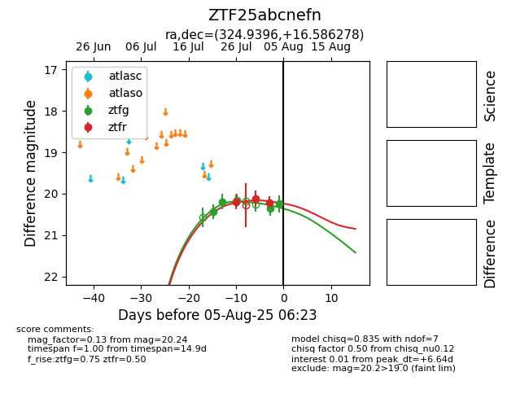

Target ZTF25abcnefn at 2025-08-05 07:33, see:
FINK: fink-portal.org/ZTF25abcnefn
Lasair: lasair-ztf.lsst.ac.uk/objects/ZTF25abcnefn
ALeRCE: alerce.online/object/ZTF25abcnefn
alt names
ZTF25abcnefn (ztf,fink)
coordinates:
equatorial (ra, dec) = (324.9396,+16.58628)
galactic (l, b) = (70.4880,-26.19710)
photometry
last ztfg=20.24, ztfr=20.23
5 ztfg, 3 ztfr detections
